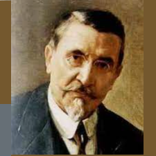
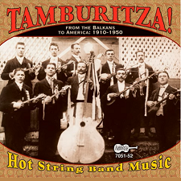

5. Moj se dragi na put sprema
Mon bienaimé s'apprête à partir
(Peta Rukovet - 5ème guirlande : 03;35 - 05:01)

Illustration de Henri Dimpre (1907-1971)
 "Moj dragi se na put sprema" Mokranjac, 5a Rukovet (1892) |
 "Moj se dragi na put sprema" . Peva Nikola CvejiÄ (1896-?) |
 "Moj se dragi na put sprema" . U izvoÄenju tamburaÅ¡kog orkestra |
 "Karanfil se na put sprema" . Peva Vasilja RadojÄiÄ (1936-2011) |
NOTE
|
Ðва ÑÑена мÑжа коÑи ÑвоÑÑ Ð¶ÐµÐ½Ñ Ð¿Ð¾Ð²ÐµÑава маÑÑи, говоÑеÑи ÑÐ¾Ñ Ð´Ð° Ñе она и Ñена, поÑебно када Ñе пÑаÑена ÑÑÑÑеÑем пÑÑÑена коÑи Ñе омогÑÑиÑи ÑÑпÑÑжниÑима да Ñе пÑепознаÑÑ, поÑеÑак Ñе клаÑиÑне пÑиÑе. Ñ Ð¼Ð½Ð¾Ð³Ð¸Ð¼ попÑлаÑним пеÑмама из Ñеле ÐвÑопе (Ðа ÐÑÑÑеÑеjÑо, ÐеÑмeнa, ÐÑÑон AÑ Ð¤Ð°ÑÐµÑ Ð¸Ñд.). CвекÑва ÑпÑÑÑа ÑнаÑ
Ñ Ñ Ñин ÑлÑге, ÑаÑе Ñе да ÑÑва овÑе или ÑвиÑе. Ðада Ñе мÑж вÑаÑи, он кажÑава ÑвоÑÑ ÑÑÑÐ¾Ð²Ñ Ð¼Ð°ÑÐºÑ Ð¸ вÑаÑа Ð¶ÐµÐ½Ñ Ñ ÑвоÑe ÑÑаÑе коÑе никад не би ÑÑебало да пÑеÑÑане. види: http://chrsouchon.fr/kroazouf.html |
Cette scène du mari qui confie son épouse à sa mère en lui disant qu'elle est aussi la sienne, surtout quand elle est accompagnée de la remise d'un anneau qui permettra aux époux de se reconnaître, est le début de l'intrigue classique de nombreuses chansons populaires dans toute l'Europe (La Pourchereito, Germaine, Itron ar Faouet etc.). La marâtre rabaisse sa bru au rang de servante, elle l'envoie garder les moutons ou les porcs. Quand le mari revient, il punit sa mauvaise mère et rétablit sa femme dans le rang qui n'aurait jamais dû cesser d'être le sien. cf: http://chrsouchon.fr/kroazouf.html |